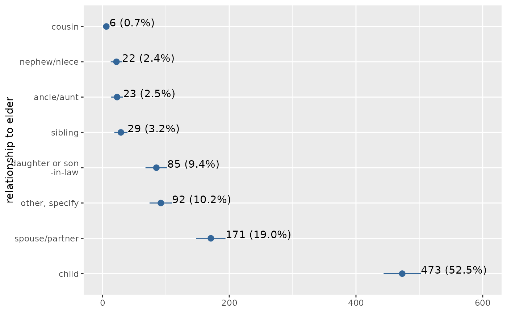
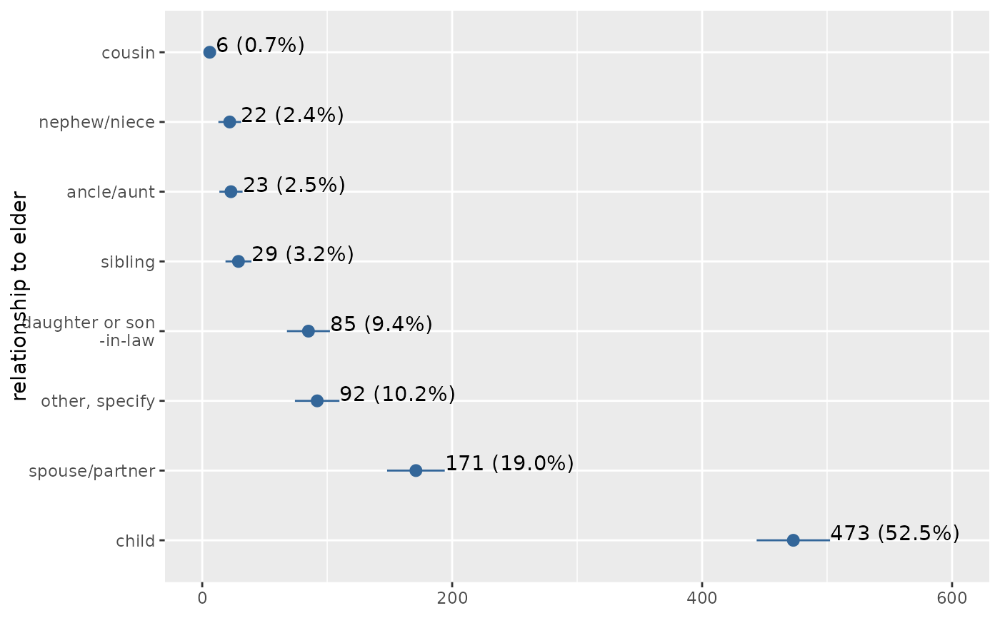

Plot frequencies of a variable as bar graph, histogram, box plot etc.
Usage
plot_frq(
data,
...,
title = "",
weight.by = NULL,
title.wtd.suffix = NULL,
sort.frq = c("none", "asc", "desc"),
type = c("bar", "dot", "histogram", "line", "density", "boxplot", "violin"),
geom.size = NULL,
geom.colors = "#336699",
errorbar.color = "darkred",
axis.title = NULL,
axis.labels = NULL,
xlim = NULL,
ylim = NULL,
wrap.title = 50,
wrap.labels = 20,
grid.breaks = NULL,
expand.grid = FALSE,
show.values = TRUE,
show.n = TRUE,
show.prc = TRUE,
show.axis.values = TRUE,
show.ci = FALSE,
show.na = FALSE,
show.mean = FALSE,
show.mean.val = TRUE,
show.sd = TRUE,
drop.empty = TRUE,
mean.line.type = 2,
mean.line.size = 0.5,
inner.box.width = 0.15,
inner.box.dotsize = 3,
normal.curve = FALSE,
normal.curve.color = "red",
normal.curve.size = 0.8,
normal.curve.alpha = 0.4,
auto.group = NULL,
coord.flip = FALSE,
vjust = "bottom",
hjust = "center",
y.offset = NULL
)Arguments
- data
A data frame, or a grouped data frame.
- ...
Optional, unquoted names of variables that should be selected for further processing. Required, if
datais a data frame (and no vector) and only selected variables fromdatashould be processed. You may also use functions like:or tidyselect's select_helpers.- title
Character vector, used as plot title. By default,
response_labelsis called to retrieve the label of the dependent variable, which will be used as title. Usetitle = ""to remove title.- weight.by
Vector of weights that will be applied to weight all cases. Must be a vector of same length as the input vector. Default is
NULL, so no weights are used.- title.wtd.suffix
Suffix (as string) for the title, if
weight.byis specified, e.g.title.wtd.suffix=" (weighted)". Default isNULL, so title will not have a suffix when cases are weighted.- sort.frq
Determines whether categories should be sorted according to their frequencies or not. Default is
"none", so categories are not sorted by frequency. Use"asc"or"desc"for sorting categories ascending or descending order.- type
Specifies the plot type. May be abbreviated.
"bar"for simple bars (default)
"dot"for a dot plot
"histogram"for a histogram (does not apply to grouped frequencies)
"line"for a line-styled histogram with filled area
"density"for a density plot (does not apply to grouped frequencies)
"boxplot"for box plot
"violin"for violin plots
- geom.size
size resp. width of the geoms (bar width, line thickness or point size, depending on plot type and function). Note that bar and bin widths mostly need smaller values than dot sizes.
- geom.colors
User defined color for geoms, e.g.
geom.colors = "#0080ff".- errorbar.color
Color of confidence interval bars (error bars). Only applies to
type = "bar". In case of dot plots, error bars will have same colors as dots (seegeom.colors).- axis.title
Character vector of length one or two (depending on the plot function and type), used as title(s) for the x and y axis. If not specified, a default labelling is chosen. Note: Some plot types do not support this argument. In such cases, use the return value and add axis titles manually with
labs, e.g.:$plot.list[[1]] + labs(x = ...)- axis.labels
character vector with labels used as axis labels. Optional argument, since in most cases, axis labels are set automatically.
- xlim
Numeric vector of length two, defining lower and upper axis limits of the x scale. By default, this argument is set to
NULL, i.e. the x-axis fits to the required range of the data.- ylim
numeric vector of length two, defining lower and upper axis limits of the y scale. By default, this argument is set to
NULL, i.e. the y-axis fits to the required range of the data.- wrap.title
Numeric, determines how many chars of the plot title are displayed in one line and when a line break is inserted.
- wrap.labels
numeric, determines how many chars of the value, variable or axis labels are displayed in one line and when a line break is inserted.
- grid.breaks
numeric; sets the distance between breaks for the axis, i.e. at every
grid.breaks'th position a major grid is being printed.- expand.grid
logical, if
TRUE, the plot grid is expanded, i.e. there is a small margin between axes and plotting region. Default isFALSE.- show.values
Logical, whether values should be plotted or not.
- show.n
logical, if
TRUE, adds total number of cases for each group or category to the labels.- show.prc
logical, if
TRUE(default), percentage values are plotted to each bar IfFALSE, percentage values are removed.- show.axis.values
logical, whether category, count or percentage values for the axis should be printed or not.
- show.ci
Logical, if
TRUE), adds notches to the box plot, which are used to compare groups; if the notches of two boxes do not overlap, medians are considered to be significantly different.- show.na
logical, if
TRUE,NA's (missing values) are added to the output.- show.mean
Logical, if
TRUE, a vertical line in histograms is drawn to indicate the mean value of the variables. Only applies to histogram-charts.- show.mean.val
Logical, if
TRUE(default), the mean value is printed to the vertical line that indicates the variable's mean. Only applies to histogram-charts.- show.sd
Logical, if
TRUE, the standard deviation is annotated as shaded rectangle around the mean intercept line. Only applies to histogram-charts.- drop.empty
Logical, if
TRUEand the variable's values are labeled, values that have no observations are still printed in the table (with frequency0). IfFALSE, values / factor levels with no occurrence in the data are omitted from the output.- mean.line.type
Numeric value, indicating the linetype of the mean intercept line. Only applies to histogram-charts and when
show.mean = TRUE.- mean.line.size
Numeric, size of the mean intercept line. Only applies to histogram-charts and when
show.mean = TRUE.- inner.box.width
width of the inner box plot that is plotted inside of violin plots. Only applies if
type = "violin". Default value is 0.15- inner.box.dotsize
size of mean dot insie a violin or box plot. Applies only when
type = "violin"or"boxplot".- normal.curve
Logical, if
TRUE, a normal curve, which is adjusted to the data, is plotted over the histogram or density plot. Default isFALSE. Only applies when histograms or density plots are plotted (seetype).- normal.curve.color
Color of the normal curve line. Only applies if
normal.curve = TRUE.- normal.curve.size
Numeric, size of the normal curve line. Only applies if
normal.curve = TRUE.- normal.curve.alpha
Transparancy level (alpha value) of the normal curve. Only applies if
normal.curve = TRUE.- auto.group
numeric value, indicating the minimum amount of unique values in the count variable, at which automatic grouping into smaller units is done (see
group_var). Default value forauto.groupisNULL, i.e. auto-grouping is off. Seegroup_varfor examples on grouping.- coord.flip
logical, if
TRUE, the x and y axis are swapped.- vjust
character vector, indicating the vertical position of value labels. Allowed are same values as for
vjustaesthetics fromggplot2: "left", "center", "right", "bottom", "middle", "top" and new options like "inward" and "outward", which align text towards and away from the center of the plot respectively.- hjust
character vector, indicating the horizontal position of value labels. Allowed are same values as for
vjustaesthetics fromggplot2: "left", "center", "right", "bottom", "middle", "top" and new options like "inward" and "outward", which align text towards and away from the center of the plot respectively.- y.offset
numeric, offset for text labels when their alignment is adjusted to the top/bottom of the geom (see
hjustandvjust).
Note
This function only works with variables with integer values (or numeric factor levels), i.e. scales / centered variables with fractional part may result in unexpected behaviour.
Examples
library(sjlabelled)
data(efc)
data(iris)
# simple plots, two different notations
plot_frq(iris, Species)
 plot_frq(efc$tot_sc_e)
# boxplot
plot_frq(efc$e17age, type = "box")
#> Warning: The `fun.y` argument of `stat_summary()` is deprecated as of ggplot2 3.3.0.
#> ℹ Please use the `fun` argument instead.
#> ℹ The deprecated feature was likely used in the sjPlot package.
#> Please report the issue at <https://github.com/strengejacke/sjPlot/issues>.
plot_frq(efc$tot_sc_e)
# boxplot
plot_frq(efc$e17age, type = "box")
#> Warning: The `fun.y` argument of `stat_summary()` is deprecated as of ggplot2 3.3.0.
#> ℹ Please use the `fun` argument instead.
#> ℹ The deprecated feature was likely used in the sjPlot package.
#> Please report the issue at <https://github.com/strengejacke/sjPlot/issues>.
 if (require("dplyr")) {
# histogram, pipe-workflow
efc %>%
dplyr::select(e17age, c160age) %>%
plot_frq(type = "hist", show.mean = TRUE)
# bar plot(s)
plot_frq(efc, e42dep, c172code)
}
#> Loading required package: dplyr
#>
#> Attaching package: ‘dplyr’
#> The following object is masked from ‘package:sjlabelled’:
#>
#> as_label
#> The following objects are masked from ‘package:stats’:
#>
#> filter, lag
#> The following objects are masked from ‘package:base’:
#>
#> intersect, setdiff, setequal, union
#> [[1]]
#>
#> [[2]]
#>
if (require("dplyr") && require("gridExtra")) {
# grouped data frame, all panels in one plot
efc %>%
group_by(e42dep) %>%
plot_frq(c161sex) %>%
plot_grid()
}
#> Loading required package: gridExtra
#>
#> Attaching package: ‘gridExtra’
#> The following object is masked from ‘package:dplyr’:
#>
#> combine
#> Warning: Not enough tags labels in list. Using letters instead.
if (require("dplyr")) {
# histogram, pipe-workflow
efc %>%
dplyr::select(e17age, c160age) %>%
plot_frq(type = "hist", show.mean = TRUE)
# bar plot(s)
plot_frq(efc, e42dep, c172code)
}
#> Loading required package: dplyr
#>
#> Attaching package: ‘dplyr’
#> The following object is masked from ‘package:sjlabelled’:
#>
#> as_label
#> The following objects are masked from ‘package:stats’:
#>
#> filter, lag
#> The following objects are masked from ‘package:base’:
#>
#> intersect, setdiff, setequal, union
#> [[1]]
#>
#> [[2]]
#>
if (require("dplyr") && require("gridExtra")) {
# grouped data frame, all panels in one plot
efc %>%
group_by(e42dep) %>%
plot_frq(c161sex) %>%
plot_grid()
}
#> Loading required package: gridExtra
#>
#> Attaching package: ‘gridExtra’
#> The following object is masked from ‘package:dplyr’:
#>
#> combine
#> Warning: Not enough tags labels in list. Using letters instead.
 # \donttest{
library(sjmisc)
# grouped variable
ageGrp <- group_var(efc$e17age)
ageGrpLab <- group_labels(efc$e17age)
plot_frq(ageGrp, title = get_label(efc$e17age), axis.labels = ageGrpLab)
# plotting confidence intervals. expand grid and v/hjust for text labels
plot_frq(
efc$e15relat, type = "dot", show.ci = TRUE, sort.frq = "desc",
coord.flip = TRUE, expand.grid = TRUE, vjust = "bottom", hjust = "left"
)

# histogram with overlayed normal curve
plot_frq(efc$c160age, type = "h", show.mean = TRUE, show.mean.val = TRUE,
normal.curve = TRUE, show.sd = TRUE, normal.curve.color = "blue",
normal.curve.size = 3, ylim = c(0,50))
#> Warning: Removed 4 rows containing missing values (`geom_bar()`).
# \donttest{
library(sjmisc)
# grouped variable
ageGrp <- group_var(efc$e17age)
ageGrpLab <- group_labels(efc$e17age)
plot_frq(ageGrp, title = get_label(efc$e17age), axis.labels = ageGrpLab)
# plotting confidence intervals. expand grid and v/hjust for text labels
plot_frq(
efc$e15relat, type = "dot", show.ci = TRUE, sort.frq = "desc",
coord.flip = TRUE, expand.grid = TRUE, vjust = "bottom", hjust = "left"
)

# histogram with overlayed normal curve
plot_frq(efc$c160age, type = "h", show.mean = TRUE, show.mean.val = TRUE,
normal.curve = TRUE, show.sd = TRUE, normal.curve.color = "blue",
normal.curve.size = 3, ylim = c(0,50))
#> Warning: Removed 4 rows containing missing values (`geom_bar()`).
 # }
# }